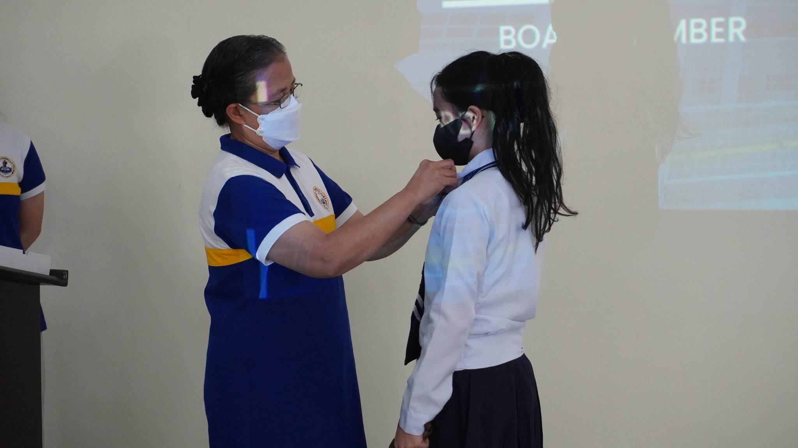

As you can see, that's me wearing my uniform in La Verdad Christian College. Please don't bother the unbuttoned button :))
I'm taking the course Associate in Computer Technology, currently in my second year and if I survive, I might graduate this year also, God Willing. Soooo, why did I take this course? well honestly, I took the exam without knowing what I'm putting myself into. I choose this because it's the only course with a lesser years to graduate.
OKAAAAY, the image above is one of my favorite picture. It's me with Ma'am Luz, as she pins the insignia. With God's help, I've become a part of the Student's Government in La Verdad.
| Elementary | Nazarene Christian Learning Center | Cebu | ||||||
| Junior HighSchool |
|
|
||||||
| Senior HighSchool |